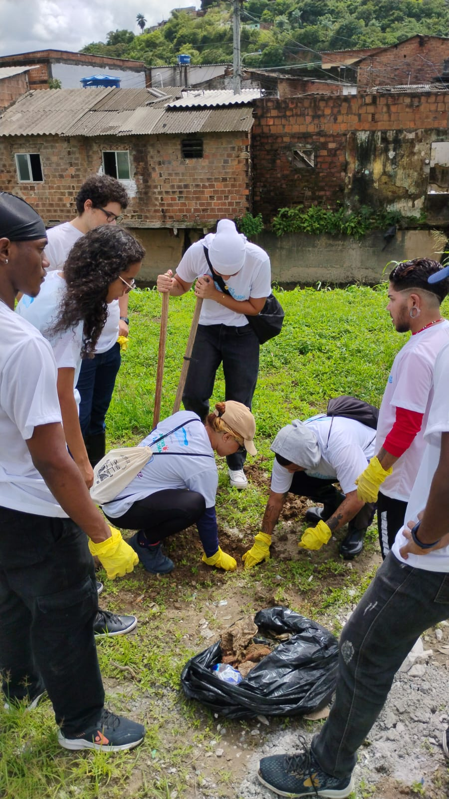
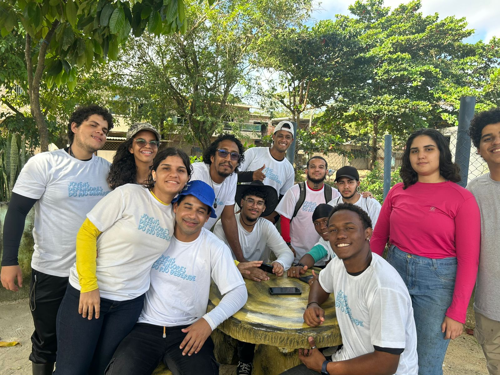

O que fazemos
Nossas Atividades
Atuamos em frentes complementares para transformar a relação entre o Recife e o Rio Beberibe.

Mutirões
Limpeza do Rio
Mobilizamos voluntários periodicamente para remover resíduos sólidos das margens do Beberibe, retirando lixo que compromete o ecossistema e a saúde das comunidades vizinhas.

Restauração
Plantio de Mudas Nativas
Realizamos plantios de espécies nativas para recuperar a mata ciliar, garantindo proteção ambiental, controle de cheias e abrigo para a fauna local nas margens do Beberibe.

Educação
Educação Ambiental
Promovemos formações em escolas e comunidades, workshops sobre racismo ambiental e mobilização digital para conscientizar e engajar cada vez mais pessoas na causa.